原文连接:https://www.cnblogs.com/z937741304/p/10679493.html
越学习越感觉自己了解的少，学习的知识不够扎实，以前总是感觉自己了解CORS，前后台交互遇到那个经典的错误信息脑海中就会想起需要后台设置 cors 错误和代码如下。
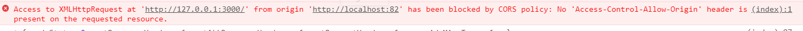
解决的方案也是随口说来，也就是在后台设置上如下类似的代码，
1 res.header("Access-Control-Allow-Origin", "*");直到这一次项目..搞得我是真的难受，这一篇文章本来想详细写一些 CORS的东西的，没想到跑题了。
说起来从开始接触node到现在也有一年多的时间了，平时也是经常看文章，看书中的知识一直积累着知识。一般的后台的东西也是知道一些的，也可以做一做。
这一次项目和java后台对接一个手机端h5的微信公众号的项目，后台三个，前端三个，历时三周，当然我是最菜的那个。
我们是前后端分离开发，我们在深圳，后台在云南。分离的也够彻底了吧。
平时遇到问题你听不懂我在说什么，我们也不知道你们在干什么，经常深入交流到晚上十一点之后，好在我们都年轻，经得起折腾。好了不说废话了，说一说这次遇到的各种问题，在这里做一下总结。
我们和后台关系挺好的，每次的问题都是大家一起努力解决，虽然好多问题，但是还是一条心，挺好的。
一、UI图 VS 业务
我们是使用vue-cli开发的项目，(用框架写代码还是很舒服的)刚开始开发几天我们解决了前端的静态页面，本来之前我们都是前端来定义项目中的数据格式的，工作不到一年的时间我见到的数据格式不是我们部长给我定义的，就是在我定义之后询问他经过他几次修改的，所以也没有想那么多，感觉数据都挺好的， 这次后台都没有看到UI图，直接根据业务来写出来的数据接口。我是真的难受了，几张表连接一下把所有的数据都返回出来就算完成了吗，而且也是刚开始，他们那边也没有数据，搞得好多字段全部都是 null，弄的页面很是蛋疼。
一周多的时间都是在企业微信群里面问数据接口好了吗？截图噼里啪啦的就怼上去几张。我还是感觉数据库的关系表要按照正常的来定义，但是返给前台的数据格式还是让一些经验丰富的前端来定义好一些，因为这次他们根本都没有看UI图导致感觉所有的接口都被重新写了一遍一样。而且那种格式也就是连表查询吧。需要什么加什么。
二、跨域问题
搞不懂为什么在node中那么简单的几行代码可以解决跨域的问题，到了java那里有那么麻烦吗。设置一下允许所有的域访问就可以了，后来看到他的代码也就是加了几个东西，他的截图。就这一张吧
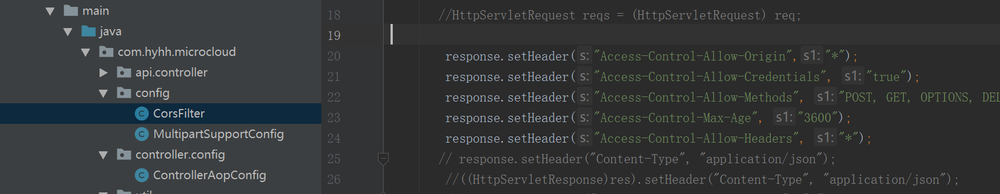
感觉也就是这个不知道他们是不是没有做过类似的东西，跟他们说跨域，啊？我用PostMan可以访问的到啊。我访问你妹哦。你们怎么写的，然后截图Postman的截图，我们写代码使用你们的测试工具写吗。
三、token的验证
因为我们做了token验证，我不知道真正的是不是这样的，我之前做了两次都是我们这样的。
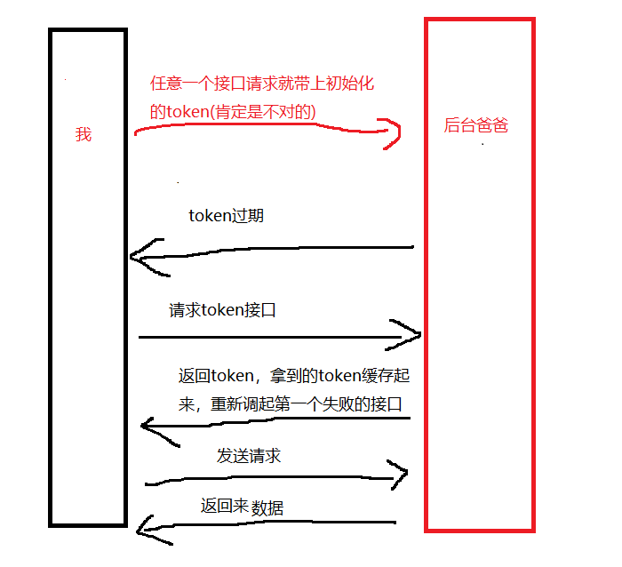
我不知道那个发送过期（或者错误的）后台要返给我们一个固定的状态代表这个token过期了这一步是不是必要的，我之前做的都是这样的，所以这次也让他们改了，他们之前都没有做发送过期token要怎么样的感觉，而且这个token的接口和另外请求数据的接口在服务器的不同的端口上面。
前端这里最开始是我在搞，最后面就不是我在弄了，因为他们后台的验证token的那些东西没有做好卡了我们四天多进度，后面还是让后台先把这个东西去掉测试的其他的东西，昨天他们才加上的token，直到今天才刚把这个发布到生产环境中。
不知道他们那里怎么做的，只要带上 Authorization 就不会跨域，只要不带这个东西就会报跨域的错误。指了好多次，说把那个跨域的东西放到这个token的前面，也不知道他们怎么搞得，也不懂他们的代码。
四、老花眼
有接口文档总是对错名字，搞半天还要后台那里给我找问题，有一个接口他们那里字母写错了，我这里搞好久不知道哪里错了，两个人找半天，还有就是我写错了。
五、post请求数据格式
用jQuery的ajax和 axios的请求有一点不一样，他们请求数据是不一样的。用jQuery请求的话默认的是application/x-www-form-urlencoded的（这里之前写错了，经过指正修改了），用axios就是json格式。我们是用的axios，后台那里识别不了json格式的。这个东西也搞了近一天当时。。我也真的是有点难受。要仔细好好看请求头信息。
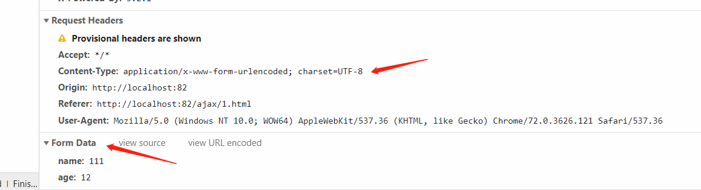
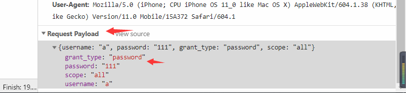
要仔细看好这两种是不一样的。
六、上传图片文件
说真的，之前工作中做的东西上传图片这个东西用的最多的还是微信自带的那个上传图片，拿到那个文件信息直接上传就好了，在浏览器里面之前上传过一次是上传的 base64 位的转码转成图片了。这一次后台又是在postman里面测试的，当时也不知道怎么去写，好在知道了 FormData 这个对象可以模拟form表单发送数据。
七、vuex
在项目开始的时候都应该先看看要不要用这个东西，由于要缓存数据，在后期的时候又加上这个东西，我们三个人只有我用了，他们也有好多跨页面的数据要保存，后面只有我自己用了一点这个。如果一开始就规定好这个就好一些了。
八、axios的options请求
我以为只有axios有那个options请求来检测是否跨域。原来这个东西是 CORS 规范规定的，引用一下阮一峰大佬的话。
跨域资源共享 CORS 详解 http://www.ruanyifeng.com/blog/2016/04/cors.html 点击链接进入
浏览器将CORS请求分成两类：简单请求（simple request）和非简单请求（not-so-simple request）。
只要同时满足以下两大条件，就属于简单请求。
（1) 请求方法是以下三种方法之一：
- HEAD
- GET
- POST
（2）HTTP的头信息不超出以下几种字段：
- Accept
- Accept-Language
- Content-Language
- Last-Event-ID
- Content-Type：只限于三个值
application/x-www-form-urlencoded、multipart/form-data、text/plain
凡是不同时满足上面两个条件，就属于非简单请求。
浏览器对这两种请求的处理，是不一样的。
九、Request header filed Authorization is not allowed by Access-Control-Allow-Headers in pregglight response
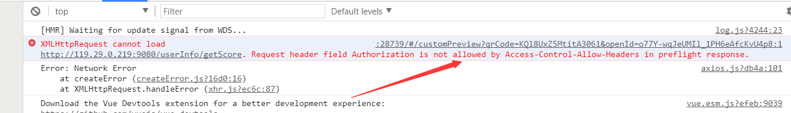
本来这个错误没有什么打大不了的，真的是倒霉。肯定不是前端的问题，这个也是我这里想要重点讲一下的东西。坑死人。
1 res.header("Access-Control-Allow-Origin", "*");
2 res.header("Access-Control-Allow-Headers", "Content-Type,Content-Length, Authorization, Accept,X-Requested-With");
3 res.header("Access-Control-Allow-Methods","PUT,POST,GET,DELETE,OPTIONS");之前那个 Access-Control-Allow-Origin : * 这里的*可以代表允许所有的origin访问。
我说让后台那里加上 Access-Control-Allow-Headers： Authorization 这个东西应该就可以了，他加了一个 * ，也就是下面的类似的这样
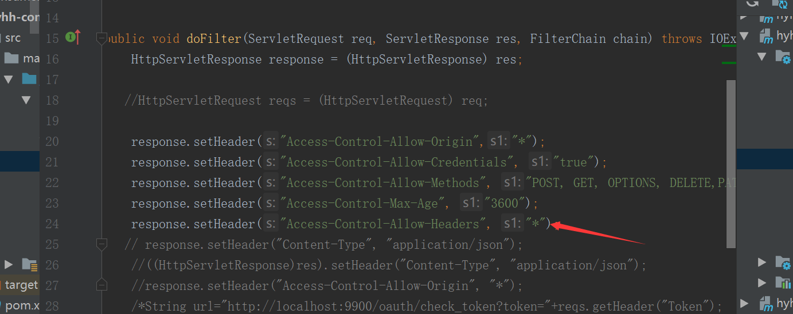
说这个*可以代表所有的东西，找了快一天的原因了，后来又让他加上了另外一个响应头。
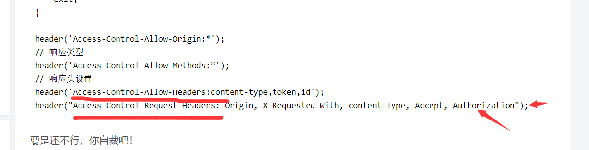
理所当然的都是不行的，后来终于找到了官网上面的文档。终于找到错误的原因了。
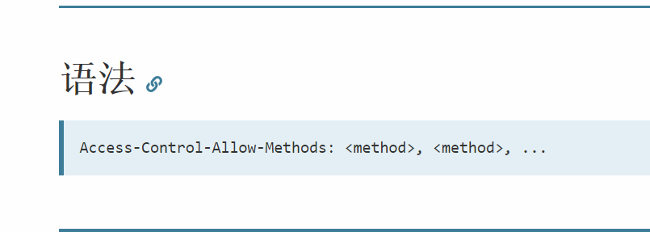
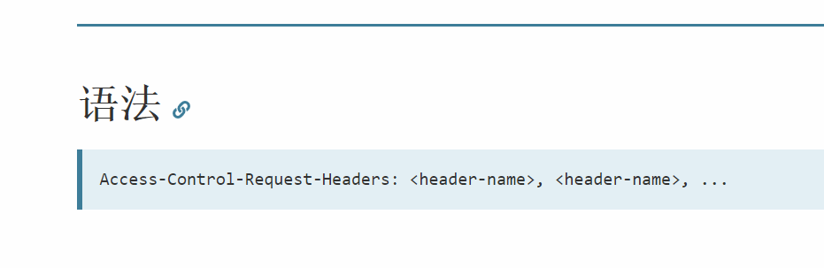
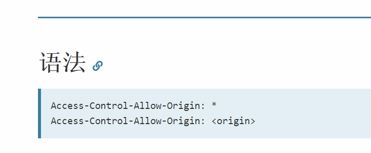
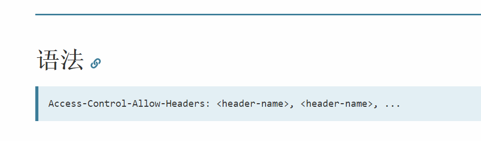
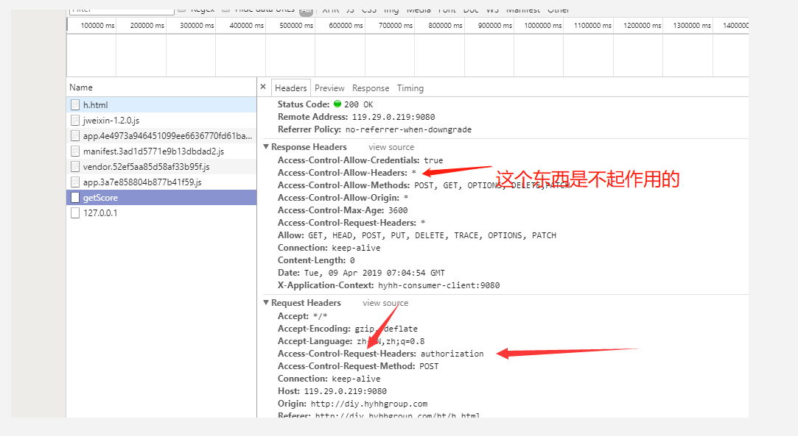
可以看到响应头那里是一个 *
我相信只要是我们项目成员的人看到这个截图绝对会终身难忘，肯定会想起我了，真的把人卡死了要。
除了那个 允许所有的域可以用 * 来表示，其他的都不可以，都必须要一个一个写出来，后台改了之后这个token终于加上去了。
其他还有一些粗心的小问题,也就想起来这么多。
本来这篇文章想着重写一下最后一个问题的心路历程的，但是写着写着写跑偏了，我们的人都挺有耐心的，也总算开发完了，把项目成果的一个二维码截图放到这里，也不知道以后可以不可以访问到。
还好我们团队有一个厉害的人，能坚持住，后台开发的同事也很好，接口调整的也非常及时，只要好好沟通，不要急眼，肯定会成功上线的。
2019.4.9日 20:31 记
微信扫二维码打开项目测试实例。
附加：评论中大哥的指导, 感谢了 @ Adming https://www.cnblogs.com/weapon/
Adming https://www.cnblogs.com/weapon/
这些所有的“坑”都是你对HTTP协议不了解，不熟悉造成的。
很多人不重视基础，对HTTP协议只了解一些皮毛，成天都在折腾各种高大上的框架，张口闭口谈的也是各种听不懂的名词，仿佛讨论HTTP协议就很low一样。
但你可知道，你们讨论的这些各种框架、各种名词都终都只是HTTP协议不同实现方式而已，asp、jsp、php、asp.net(asp.net core) 、nodejs、app、小程序、公众号、服务号这些耳熟能详框架（或名词）那个不是建立在HTTP之上的（或能离开HTTP协议）。
可以这样说，做Web开发不深入理解HTTP协议的人在这个行业的前途有限。
也不是说就一定干不了这行了，我见过很多挂着“高级”头衔的前端或后端开发对HTTP协议的了解也仅限于知道GET、POST、200、404、500而已，也能工作，看起来干得还不错，但和他们交流起来真的打人的冲动都有。
例如：我写好一个api接口给他，他说调不通，返回404，我说我那个api接口只接受json格式的数据，他说我是传的json格式啊，我说必须要在HTTP请求头加入Content-Type:application/json，他说不会，还说我要求多，又说请求是组件封装好了的，没法加，老子随手百度一下他用的那个组件的用法然后写个示例给他就或以了（我很肯定一个成熟的前端HTTP组件不可能弱智到连设置常用的HTTP头都不行）。
反之，你理解了HTTP协议就是找到了Web开发的捷径，一个一通百通的阀门，深入了解HTTP协议对Web开发中遇到的很多问题跟本不是问题，就算有问题也可以很自然的迎刃而解，像作者文章中那些问题，在你深入了解HTTP协议后我相信你自己都会嘲笑自己，人穷怪屋基,没米吃怪筲箕,
-------------
别以后了，现在就可以看，百度一下HTTP协议中文版，内容又不多，抓重点理解就可以了（后面最好买一本HTTP权威指南之类的书系统学习一下）。
其实HTTP协议就那点东西，抓重点理解就行。
1.HTTP协议三个最重要的特性：无状态、短连接、单向(只能客户端请求，服务端在接到请求后处理后返回，不能由服务器端向客户端推数据)。
2.常用的请求方式，get、post、put、delete，并了解get和post的区别。常见的HTTP状态码，200、400、500、404、403等等。
3.不管是请求还是返回总是包含header和body两部分，又称请求头、请求内容，返回头，返回内容。header是键值对，绝大多数情况下都是HTTP协议定义好或推荐的用法，只有在极少数的情况下需要自定义。body的格式一般和header指定的Content-Type值一致。
4.关于Content-Type，它的作用是告诉接收方用什么方式来解析对应的body数据，很多时候可以省略，但你一定要知道有这个东西。
比如：请求头Content-Type常用值有：application/x-www-form-urlencoded(表单提交)、multipart/form-data（文件上传）、text/plain（纯文本）、application/json。
返回常用的有：text/plain、text/xml、text/html等等（完整的Content-Type列表自行百度，只需要记一些常用的就行）。
为什么JQuery和axios的默认Content-Type不一样呢？因为，JQuery流行的时候还没有大规模的应用前后端分离，所有默认还是传统的表单提交方式（Content-Type值是application/x-www-form-urlencoded不是你说的Form-Data），而axios天生就是为前后端分离而生的，所有默认Content-Type值就是application/json。
我强调这一点的原因就是想说，这个默认在HTTP协议中并没有强制规范，都是各个浏览器，Web服务器或HTTP组件自行定义的。
也许你有疑问，我通过抓包发现好像请求头或返回头并没有Content-Type样，那是因为大多数Web服务器或浏览器都可以自己根据内容推断出格式。
5.一些其他常用的http header 键/值的作用。
6.POST Content-Type:Multipart/form-data 有一些特殊，它是在早先的HTTP请求中没有定义，后来专门添加的用来文件上传的，详见RFC1867。
7.也就这些了